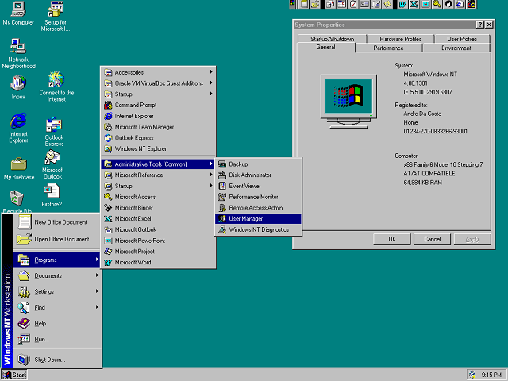

I'm a tech enthusiast who loves to tinker with computers, and especially have an interest in old computers from the DOS days, which would consist of Pentium-era PCs. More information can be found in the useful links I've provided.
Other things I do include music arrangements and composition.

Image courtesy of Da Costa, Andre. from Groovy Post. Da Costa, Andre. “Looking Back at Windows NT 4 on Its 20Th Anniversary.” groovyPost, Aug. 2016, https://www.groovypost.com/news/windows-nt-4-20-year-anniversary/. Accessed 17 July 2026.